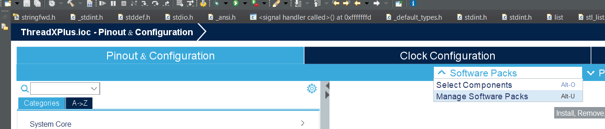
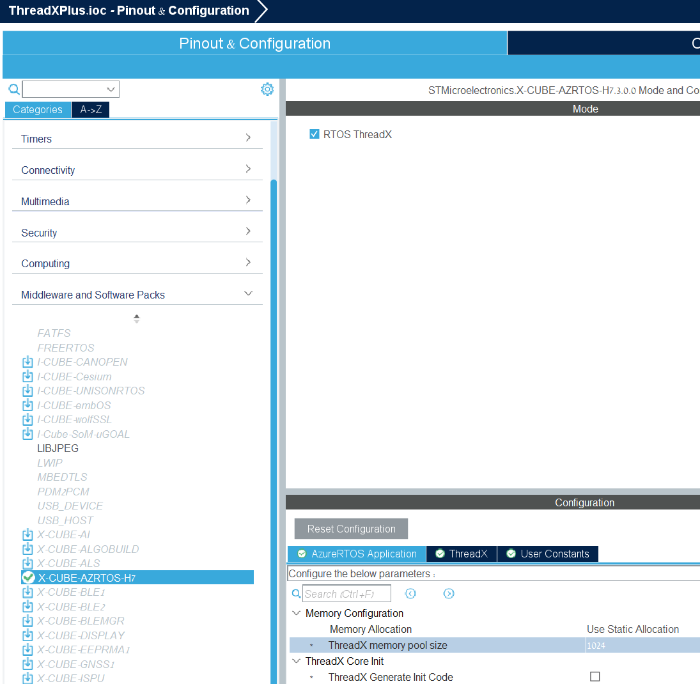

Install ThreadX on ST
Introduction
In this tutorial we will install ThreadX by using the CUBE IDE, first you need to install CUBE IDE than open project, after that you can install the ThreadX. I write tutorial but you not must to use them, you can find a lot of tutorials in google.
Install CUBE IDE
You can download the CUBE IDE from here: Link
You also need to download CUBE MX: Link
Open project
- Open Cube IDE
- Go to "File->New->STM32 project"
-
New window will open, in field "Commercial Part Number" you need to add your STM32 model ("for example my is STM32H743ZIT6"),
in the right bottom of the screen you will see list of STM32 modules, select your model from the list, on bottom of screen press on the "Next >" -
New window will open, in the field "Targeted Language" select "C++", and in the field "Project Name:" Write the name of the your project, press on the "Finish" button.
-
New window Eil ask if you want memory Protection, use your brain and press "Yes".
-
Now wait, it can take sometimes, in the end you will get the next screen
Add ThreadX
- In the screen you need to select the tab "Pinout & configuration" and select "Software Packs", than select "Manage software packs" 
- New window will open, select tab "STMicroelectronics", in this tab you need to find "X-CUBE-AZRTOS-XX" ("XX" is the name of your family model, for example my is "H7"), than select it and it open list of package, you need to check the " Azure RTOS STM32Cube expansion package for STM32XX series" (again "XX" is the name of your family model), than press install
- After the download finish, Now you need to return to main screen and again select the tab "Pinout & configuration" and select "Software Packs", but now select the "Select Components"
- New window will open, you will see list of all the pack you and add to your project, you need to select "STMicroelectronics.X-CUBE-AZRTOS-XX"(again "XX" is the name of your family model)-> RTOS ThreadX-> ThreadX, than select the checkbox of "Core" , Note: If "STMicroelectronics.X-CUBE-AZRTOS-XX" is gray press on install, after the install select it.
- On the main screen on the left side you see list of option, select "Middleware and Software Packs", it open a list, than select "X-CUBE-AZRTOS-XX", it open new screen, check the box of field "RTOS ThreadX" ,
- Save the file (go to File->Save), the IDE will generate the code, the first time will take sometime.
Next step
Now you ready to start with the real thing! Add ThreadX++.